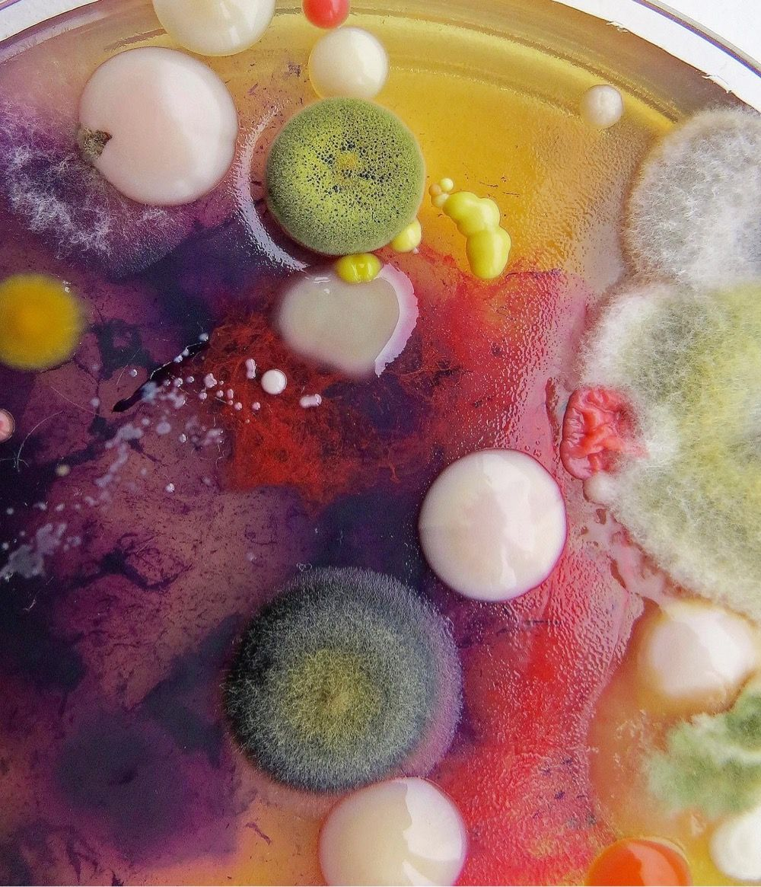
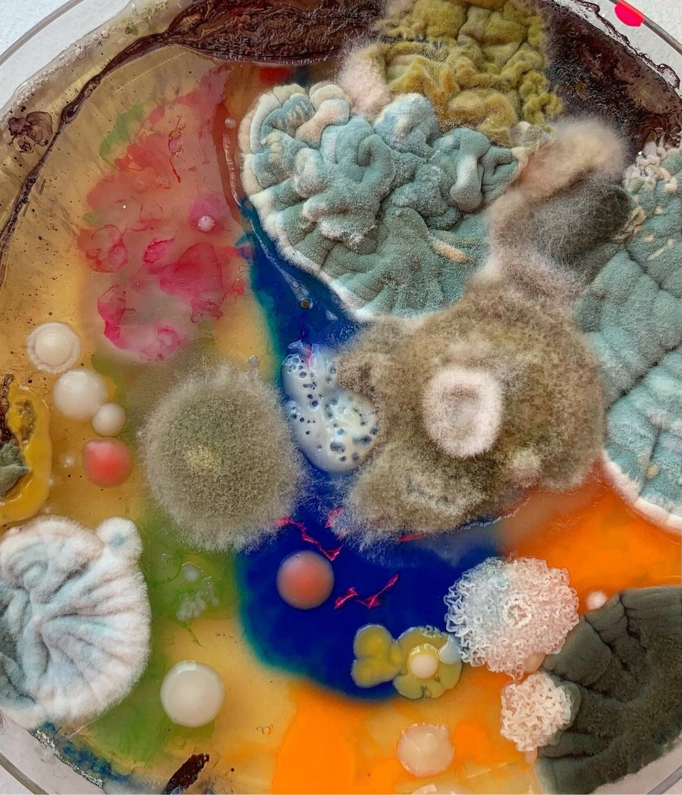
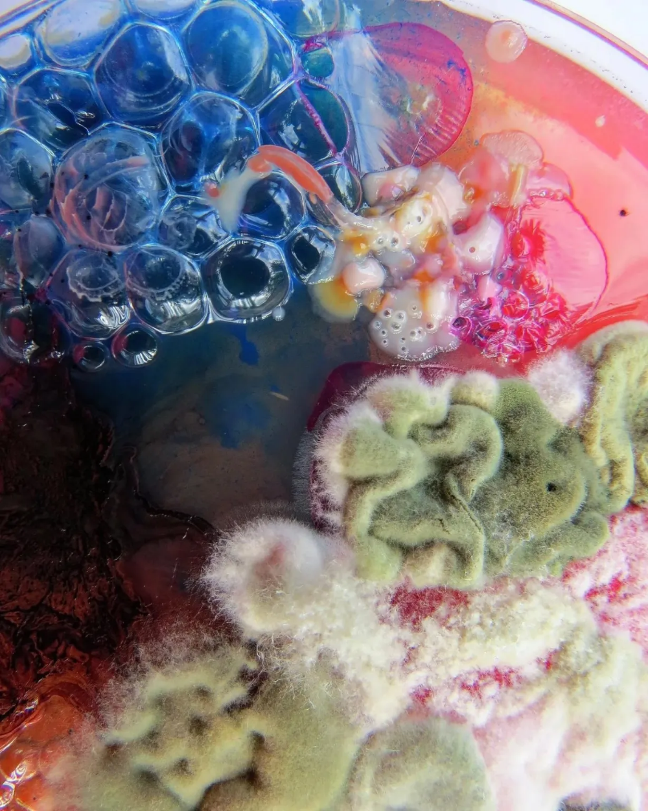

In corners and crevices, mold takes hold,
A testament to nature's stories told,
Its colors and patterns, a sight to see,
A marvel of creation, just let it be.
A testament to nature's stories told,
Its colors and patterns, a sight to see,
A marvel of creation, just let it be.
Amidst decay and decomposition,
Mold thrives with ease and no inhibition,
It breaks down matter, and serves its role,
A vital piece of nature's puzzle whole.
Mold thrives with ease and no inhibition,
It breaks down matter, and serves its role,
A vital piece of nature's puzzle whole.


Though oft maligned and misunderstood,
Mold's beauty is something that we should,
Take a moment to appreciate and behold,
A wonder of nature, both new and old.
Mold's beauty is something that we should,
Take a moment to appreciate and behold,
A wonder of nature, both new and old.